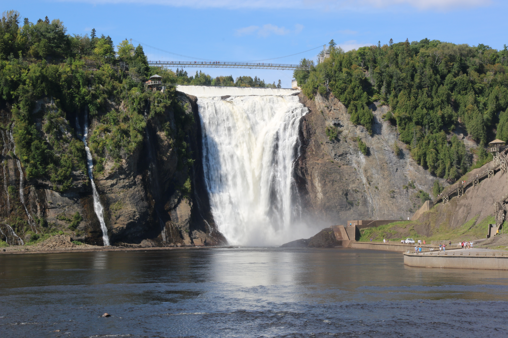
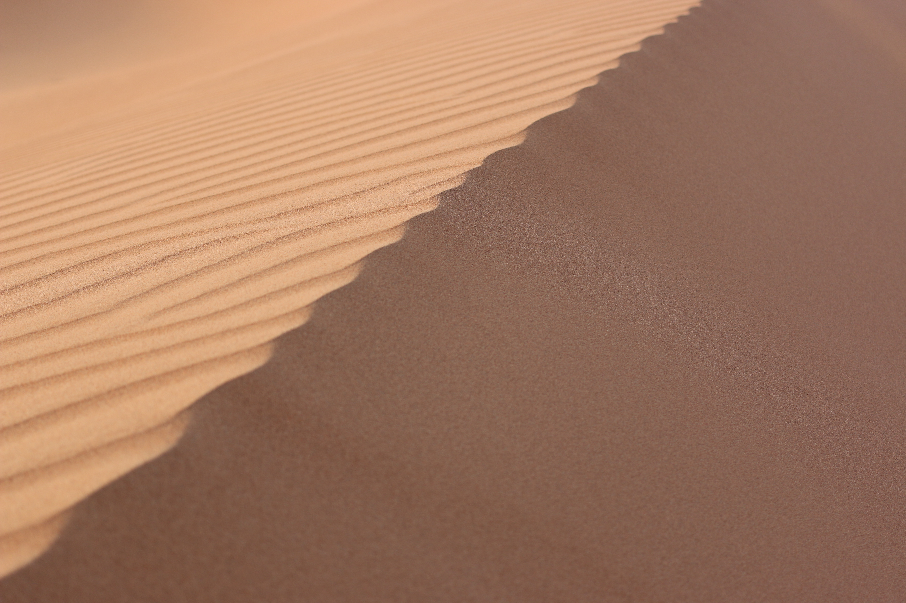
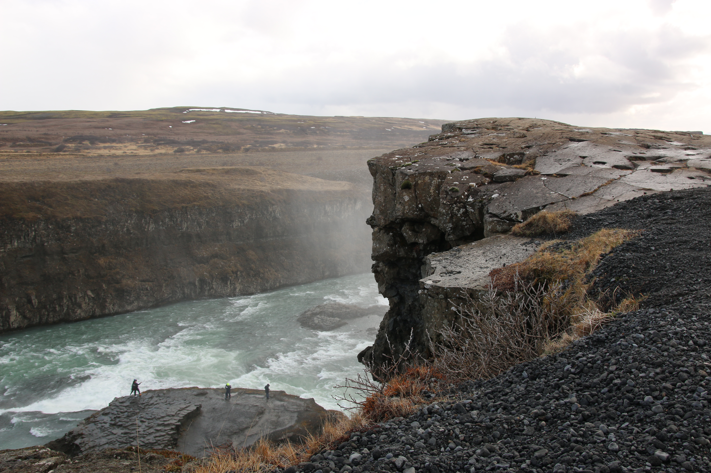
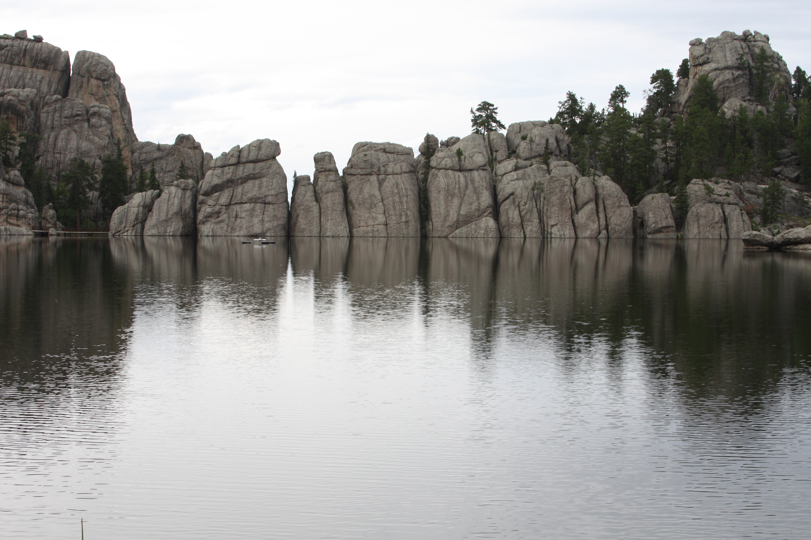
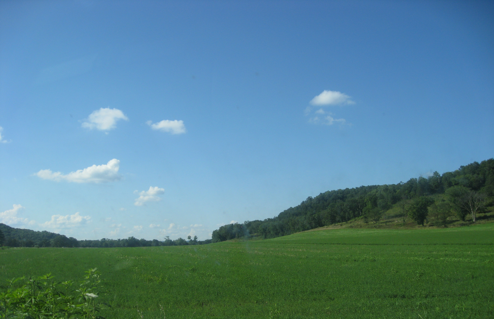
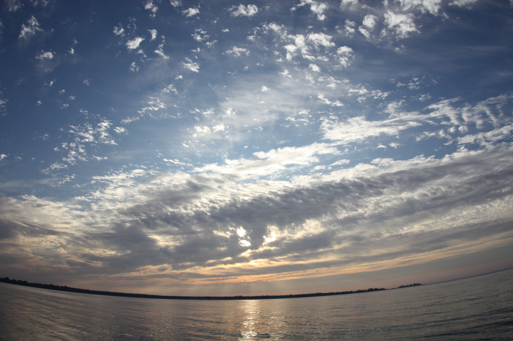
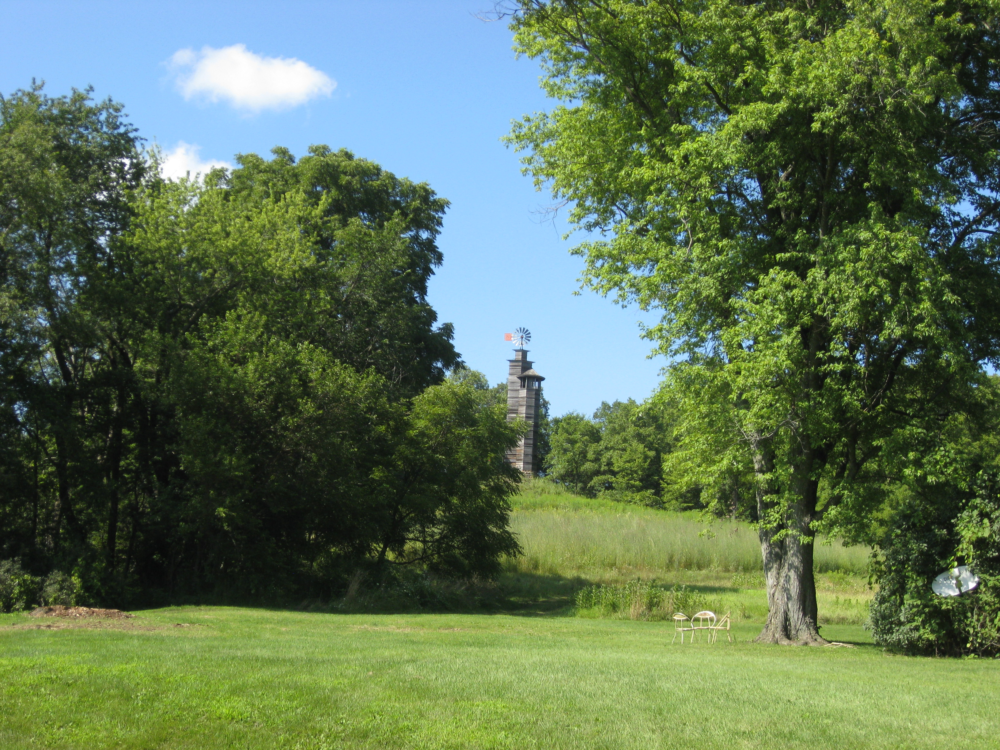
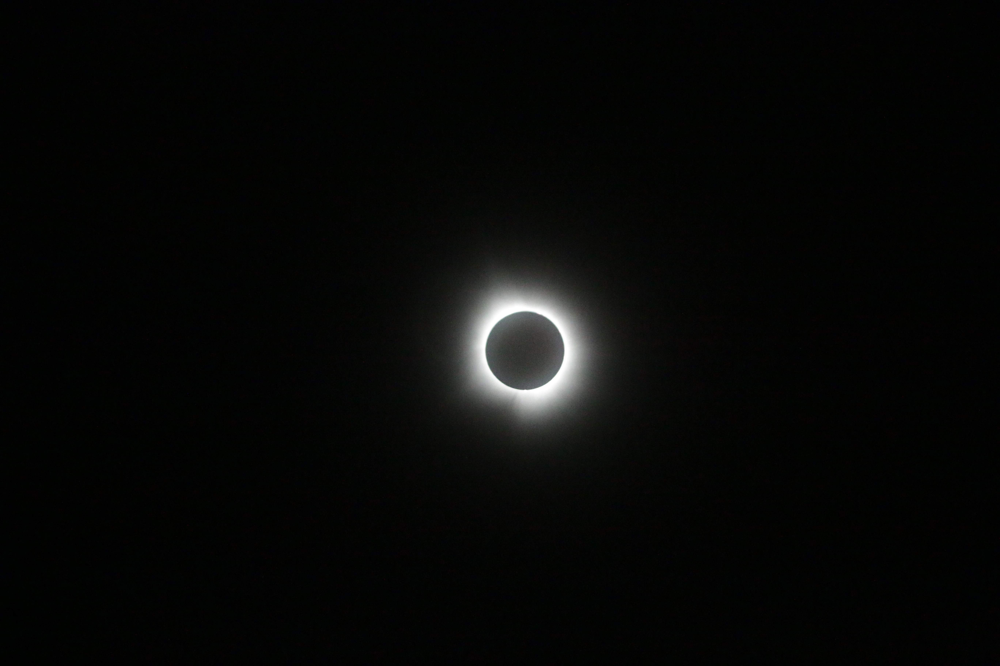

Series 01
Natural landscapes, open terrain, and the behavior of light across unbuilt environments. Iceland, Quebec, South Dakota, Illinois, and beyond — a twenty-year search for the moment when light and land find each other.







